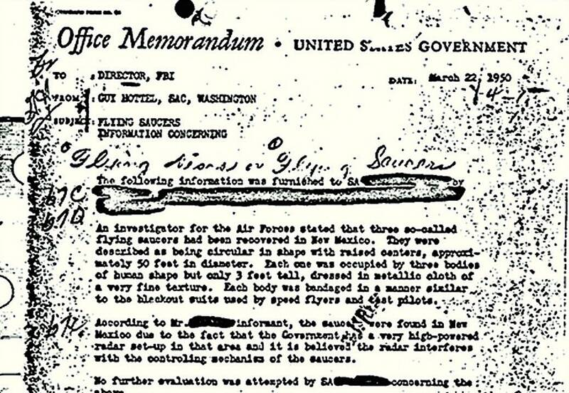

Aztec UFO crash
Hart Canyon near Aztec, New Mexico, 1948

The story says a flying saucer about 100 feet across landed intact in Hart Canyon, northeast of Aztec, on March 25, 1948, and that the military recovered it along with the bodies of 16 small humanoid crew members. It reached the public through Variety columnist Frank Scully, whose 1950 book Behind the Flying Saucers became a bestseller. Scully's sources were oilman Silas Newton and a man he called "Dr. Gee," later identified as Leo GeBauer. In 1952, reporter J.P. Cahn showed in True magazine that the two were con men selling fake oil-detecting devices, and they were later convicted of fraud. A 1950 FBI memo from agent Guy Hottel, relaying a secondhand story of three saucers recovered in New Mexico, is often linked to the same tale. Researchers such as William Steinman and Scott Ramsey have since argued the crash was real, and the town has held an annual UFO symposium. Most historians regard it as a hoax. The pin marks the approximate crash site. 1
Open in the interactive Watcher
Related
Sources
- Aztec crashed saucer hoax Wikipedia